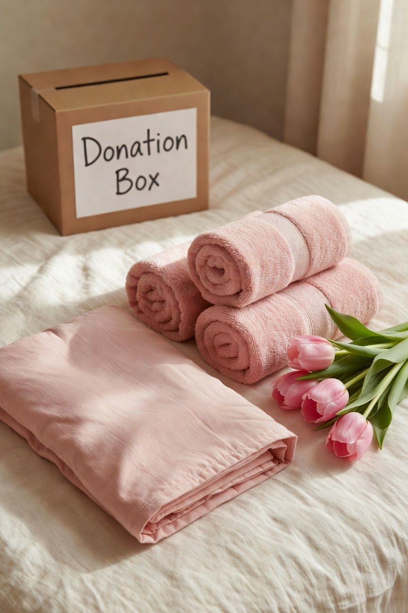
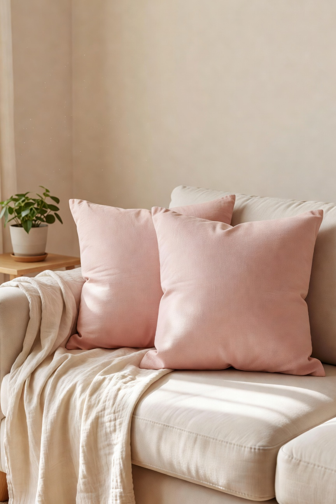
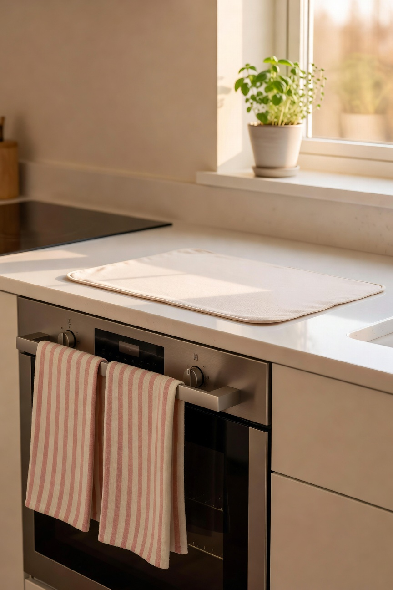
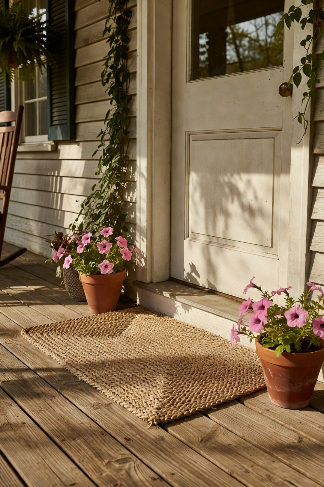

Every spring I get the urge to refresh something in the house. Not a full renovation -- I am not that person and our budget is not that budget. More like a thoughtful refresh. New throw pillows. A different rug somewhere. Moving things around, donating what we have outgrown. It costs relatively little and makes the house feel genuinely different. I love this project every year.
This year I set a hard limit for the whole thing and I stuck to it. Here is how I approached it.
The Rule I Follow

Before anything new comes in, something has to leave. This keeps the house from accumulating things that do not serve us anymore and forces me to be intentional about what I am actually replacing versus just adding. It also means a trip to donate things, which I find deeply satisfying.
Living Room

New throw pillow covers. This is the fastest way to change the feel of a room and I do it almost every spring. I swap out the darker, heavier tones of winter for lighter colors and the living room immediately feels like a different season. The pillows themselves stay -- just the covers change. Very low cost, big impact.
A lighter weight throw blanket came out to replace the heavy fleece one that lives on the couch through winter. Carmy was immediately on the new blanket. I have accepted this.
Kitchen

New hand towels and a fresh dish drying mat. These are the things that get dingy slowly and you stop noticing until you replace them and suddenly your kitchen looks fresh and cared for. This is a very low cost refresh that makes a disproportionate difference. I also replaced the small rug in front of the sink that had been embarrassing me for longer than I will admit.
Outside

A new doormat for the front door. Ours was past its time. I walk past it every single day and had been telling myself I would replace it for months. This spring I actually did. Added some small planters on the front porch too. The whole entry looks welcoming now and it costs very little to get there.
What I Did Not Do
I did not buy anything just because it was on sale or because I saw it somewhere and thought it was pretty. I had a list, I stuck to it, and I stopped when the list was done. This is the discipline part of home refreshing and it is the part that keeps it from getting out of hand.
The Result
The house feels like spring. That is the whole assignment. Done.
-- Christin Marie